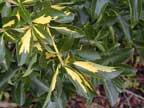

Spindle tree
Euonymus europeus
Other names
spindleberry
Description
Deciduous shrub or small tree 2 6 m high. The bark is grey and smooth. Leaves are oval leathery dark green turning yellow red in the autumn. It has small greenish white flowers and four lobed fruit which turn from green to red in the autumn.
Similar plants
Japanese spindle trees (E. japonicus) are common in gardens. Probably poisonous.
Distribution
Found throughout NZ. An ornamental which occasionally escapes onto waste land, bush margins and plantations.
Toxin
Not conclusive. Contains cardiac glycosides in fruits and leaves evonoside, evogioside and evomonoside the aglycone is digitoxigenin. Also 12 alkaloids found at a concentration of 0.1% in seeds: the major one is evonine. All parts of plant toxic.
Species affected
Reported poisonings are rare. Seen in mainly in people but also animals. Reported cases include toxicity in goats and horses. Fatal poisoning’s of 2 horses which ate shoots.
Clinical signs acute
Can have a long latent period. Man nausea, vomiting, diarrhoea, weakness, chills, coma and convulsions. Animals are said to look purged. Horses have reported to become restless and suffer paralysis of the digestive tract with consequent constipation. Their pulse also became rapid and death occurred within 4 days.
Clinical signs chronic
Post mortem signs
Inflammation of the intestine of horses.
Diagnosis
Exposure to plant and clinical signs.
Differential diagnosis
Colic, grass fever in horses. Clinical signs not well established.
Treatment
Gastric lavage and activated charcoal. Purgatives and demulcents.
Prognosis
Guarded. Can be fatal.
Prevention
References
Conner H.E. The Poisonous Plants In New Zealand. 1992. GP Publications Ltd, Wellington
Cooper M R, Johnson A W. Poisonous Plants and Fungi in Britan: Animals and Human Poisoning. Her Majesty’s Stationary Office. London. 1998
Parton K, Bruere A.N. and Chambers J.P. Veterinary Clinical Toxicology, 2nd ed. 2001. Veterinary Continuing Education Publication No. 208
|
|
|
|
|
|
||
|
 |
|
|